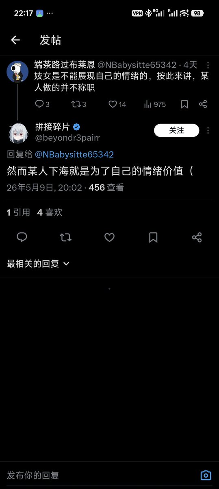

amber
@amber_digit2
@SakurabaEma_ITN 因为他没把咱当人

英酱猫猫🍥
@SakurabaEma_ITN
@amber_digit2 “妓女是不能展现自己的情绪的”
说难听点，按他的标准，我以前遇到砍价，不给钱，恶心人的单主都只能忍着，一点话都不能说
因为不能展现情绪，所以我不能对这些人态度差，不能赶走
给多少钱，就有多少服务，这才是正确的
而且，为什么性工作者在这里就没有人权一样？ https://t.co/5bWENtJPsM